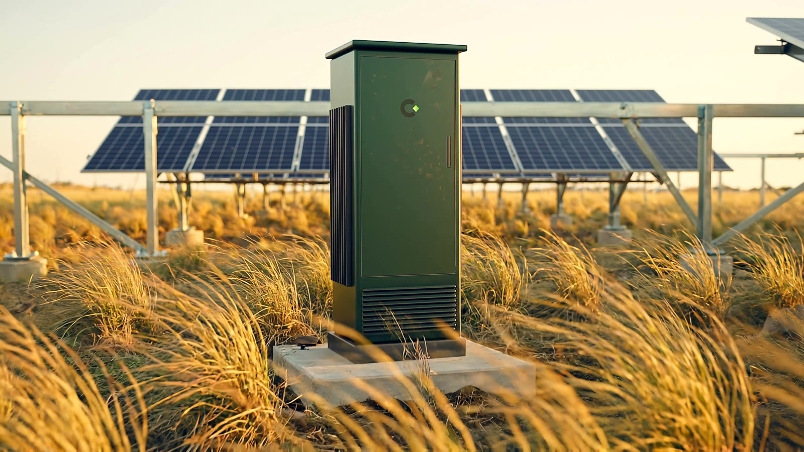
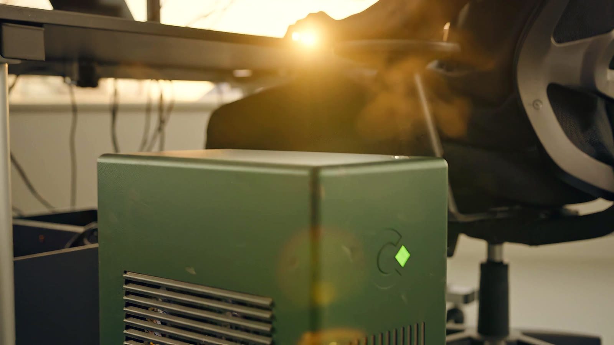
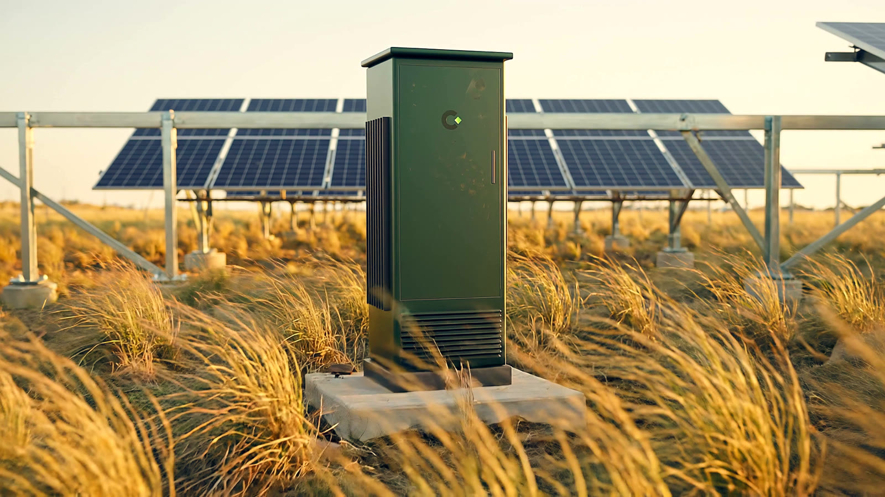
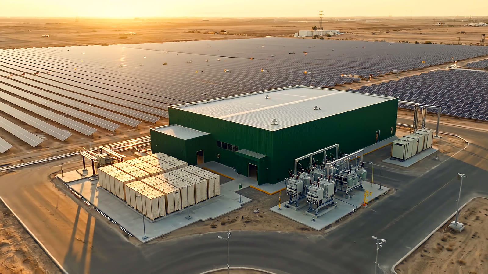

2.5%
pvlib and NREL SAM agree within 2.5% on the same weather, at every site.
pvlibNREL SAMkWh per kWp a year

Combine is a practical way for independent builders and small teams to adapt open-weight models and run private AI on their own hardware, powered mostly by the sun.
One workstation, one solar array, one battery. Fine-tune and run your own models on energy you can see, with the grid as backup.
A small lab node: about 2 kWp of panels, 5 to 15 kWh of storage, and one accelerator workstation. Flexible fine-tuning work moves into the sunniest hours. Private inference runs through the working day.
We validate our energy model against two industry-standard open solar models, pvlib and the NREL System Advisor Model, on real hourly weather, and every sizing on this page uses the result.
pvlib and NREL SAM agree within 2.5% on the same weather, at every site.
Output lost to panel heat at hot sites, now built into every sizing.
Modelled solar share of a full year's load for a 2 kWp, 5 kWh node. The gap sits in the rainy months.
How far two satellite records differ on sunlight at the same place. We size against both.
Pick a scale, watch it, then change the inputs and see what capacity it takes. Every result shows its working.
Adapt an open-weight model to your domain, train a small model, or run private local inference on a solar-assisted workstation.
Presets set typical power and session length for each workload. Solar yield is 75%, validated against NREL SAM for hot sites. Sessions are placed in the sunniest hours.
A pole-mounted device with its own panel and battery checks bay status on a small vision model. The question is whether sunlight alone can keep it reporting.
Loads include sensing, compute and radio. Panel size and storage set how often the unit can capture and report.
Each bay is checked against the camera's sightlines and reported as clear, unknown or stale before staff direct a move.
A future solar-assisted campus would pair accelerator racks with a utility connection, storage, redundant power, cooling and network access. Firm power still carries nights.
PUE is total facility power divided by IT power. Firm power and storage carry nights and low-sun days.
Energy-aware scheduling earns its place. In the tightest modelled case it cuts grid import from 286 to 107 kWh a year by moving flexible sessions into sunnier days.

Storage is a real lever. At the Accra reference, going from 5 to 15 kWh cuts modelled grid import from 75 to 29 kWh a year.

Panels lose 5 to 8% to heat at tropical sites, so we plan with 73 to 78% delivered yield.

Initial systems use existing accelerators. Custom silicon follows workload validation and a feasibility decision. We claim no RTL, no EDA licence and no tape-out.
Set targets from a measured system baseline: the energy model, then real workload traces.
Simulation-only exploration of a small scheduling and power control block.
A written feasibility note says what would justify or end the silicon path.
Energy model v1, 54 scenarios, published with its assumptions.
pvlib and NREL SAM cross-check. Findings corrected the same day.
Real power and memory traces for fine-tuning and inference on a cloud GPU.
Replay on measured traces. Scope a digital twin of one node.
Feasibility note for the energy management block, simulation only.
One technical report tying model, traces and interviews together.
The atlas maps NASA POWER climatology for candidate regions. Our cross-check found that a second dataset can disagree by up to a fifth at the same point, so every site is sized against both.
Open the AtlasBars scaled to 7 kWh/m²/day. Validation reference points.
Independent builders and small LLM labs who want to fine-tune and run their own models on hardware they control, with energy they can see. The same system scales to yards and data center campuses.
We validate it against pvlib and NREL SAM on real hourly weather. That work built panel heat into every yield figure and made storage sizing follow seasonal demand. The model, data and code are open, so anyone can rerun it.
In the founder's letter: why Combine exists, where it stands and what comes next.
One open-weight model, one agreed quality bar, and whole-workstation power measured on a conventional supply before any solar is added.
Tell us what you want to fine-tune or run privately. We will size it against the model and share the numbers.
Discuss a Pilot